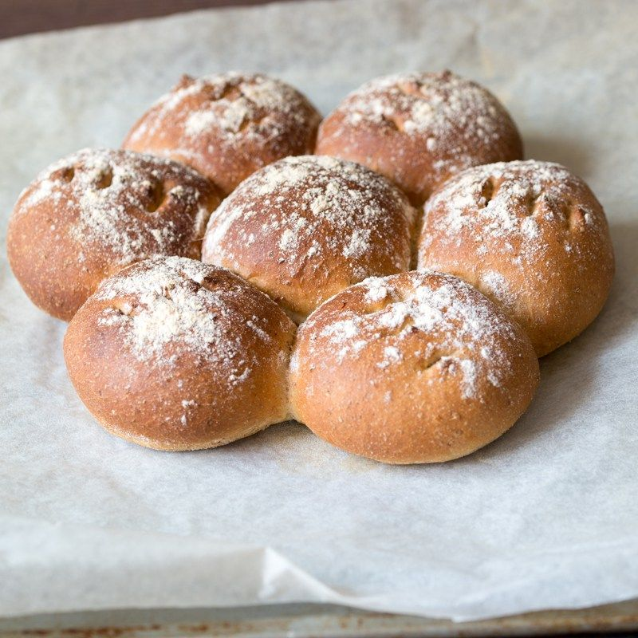

Ale Bread Rolls

A flavorful roll reminiscent of medieval times. This recipe is best prepared using a high-quality flavorful ale.
Ingredients
Makes 14/Prep 3 hours/Bake 30 minutes
- 400g strong white bread flour, plus extra for dusting
- 100g strong wholemeal bread flour
- 10g salt
- 10g instant yeast
- 30g unsalted butter, softened
- 300ml good-quality ale
- Olive oil for kneading
Instructions
- Tip the flours into a large mixing bowl, and add the salt to one side of the bowl and the yeast to the
other. Add the butter and three-quarters of the ale. At this stage, just move the flour around gently with
your fingertips. Continue to add the ale, a little at a time, until you've picked up all the flour from the
sides of the bowl. You may not need to add all the ale, or you may need to add a little more (or add a
splash of water) - you want dough that is soft, but not soggy. Use the mixture to clean the inside of the
bowl and keep going until the mixture forms a rough dough.
- Coat the work surface with a little olive oil, then tip the dough onto it and begin to knead. Keep kneading
for 5-10 minutes. Work through the initial wet stage until the dough starts to form a soft, smooth skin.
- When your dough feels smooth and silky, put it into a lightly oiled large bowl. Cover with a tea towel and
leave to rise until at least doubled in size - at least 1 hour, but it's fine to leave it for 2 or even 3
hours.
- Line 2 baking trays with baking parchment or silicone paper.
- Tip the dough onto a lightly floured surface. Fold it inwards repeatedly until all the air is knocked out
and the dough is smooth. Divide into 14 equal pieces, each weighing about 60g. Roll each one into a ball by
placing it in a cage formed by your hand and the table, and move your hand around in a circular motion,
rotating the ball rapidly. The shape will come with practice. Place one dough ball in the middle of each
prepared baking tray and position the rest of the balls around, so they are almost touching and you have 7
balls on each tray.
- Put each tray into a plastic bag and leave to prove for about 1 hour, until the dough is at least doubled in
size and springs back quickly if you prod it lightly with your finger. Meanwhile, heat your oven to 210C.
- Dust the rolls with flour and give each one 3 little snips with scissors (leave the ones in the middle uncut
if you like). Bake for 30 minutes, until the rolls are golden in color and sound hollow when tapped on the
base. Leave to cool on a wire rack. Eat with lots of butter.